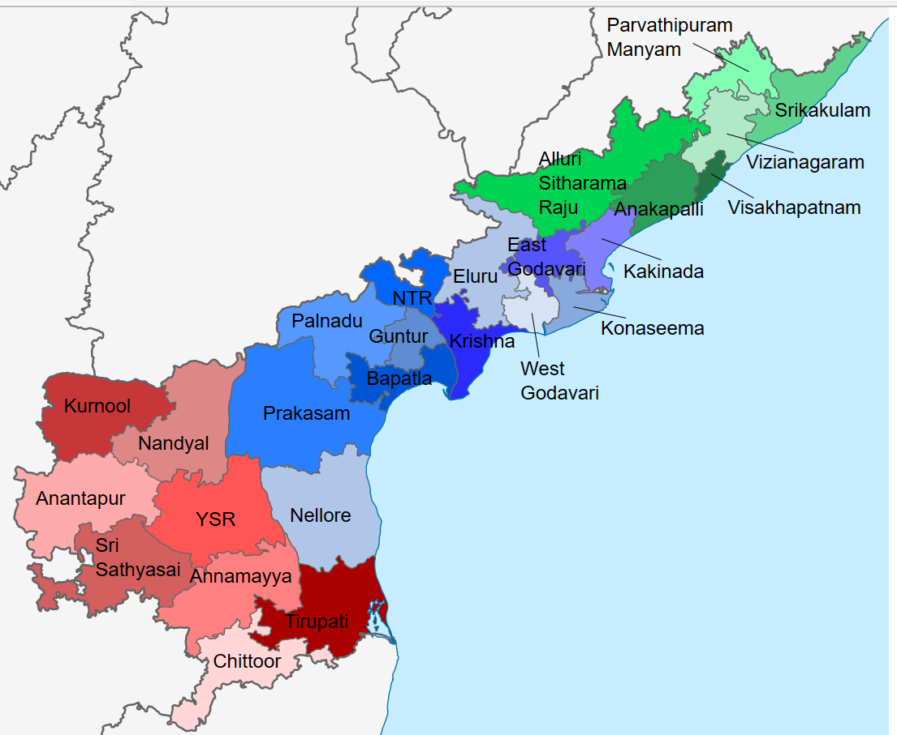
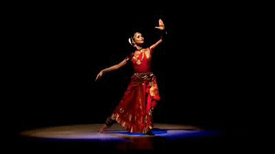

___________________________ANDHRA PRADESH_____________________________

Andhra Pradesh is a state in the south-eastern coastal
region of India. It is the seventh-largest state by area covering an area of 162,975 km2 (62,925 sq mi) and tenth-most populous state with 49,386,799 inhabitants. It is bordered by Telangana to the north-west, Chhattisgarh to the north, Odisha to the north-east, Tamil Nadu to the south, Karnataka to the west and the Bay of Bengal to the east. It has the second longest coastline in India after Gujarat, of about 974 km (605 mi)
ANDHRA PRADESH STATE EMBLEM :

ANDHRA PRADESH STATE DANCE:
 Kuchipudi is one of the eight major Indian classical dances
. It originates from a village named Kuchipudi in the Indian state of Andhra Pradesh.
Kuchipudi is a dance-drama performance, with its roots in the ancient Hindu Sanskrit text of Natya Shastra. It developed as a religious art linked to traveling bards, temples and spiritual beliefs, like all major classical dances of India Evidence of Kuchipudi's existence in an older version are found in copper inscriptions of the 10th century, and by the 15th century in texts such as the Machupalli Kaifat. Kuchipudi tradition holds that Tirtha Narayana Yati – a sanyassin of Advaita Vedanta persuasion, and his disciple, an orphan named Siddhendra Yogi, founded and systematized the modern version of Kuchipudi in the 17th century. Kuchipudi largely developed as a Krishna-oriented Vaishnavism tradition, and it is known by the name of Bhagavata Mela in Thanjavur.
ANDHRA PRADESH STATE BIRD:
 The rose-ringed parakeet (Psittacula krameri), also known as the ring-necked parakeet (more commonly known as the Indian/Pakistani ringneck parrot), is a medium-sized parrot in the genus Psittacula, of the family Psittacidae. It has disjunct native ranges in Africa and the Indian Subcontinent, and is now introduced into many other parts of the world where feral populations have established themselves and are bred for the exotic pet trade.
One of the few parrot species that have successfully adapted to living in disturbed habitats, it has withstood the onslaught of urbanisation and deforestation.
The rose-ringed parakeet (Psittacula krameri), also known as the ring-necked parakeet (more commonly known as the Indian/Pakistani ringneck parrot), is a medium-sized parrot in the genus Psittacula, of the family Psittacidae. It has disjunct native ranges in Africa and the Indian Subcontinent, and is now introduced into many other parts of the world where feral populations have established themselves and are bred for the exotic pet trade.
One of the few parrot species that have successfully adapted to living in disturbed habitats, it has withstood the onslaught of urbanisation and deforestation.
ANDHRA PRADESH STATE FRUIT:
A mango is an edible stone fruit produced by the tropical tree Mangifera indica. It is believed to have originated between northwestern Myanmar, Bangladesh, and northeastern India. indica has been cultivated in South and Southeast Asia since ancient times resulting in two types of modern mango cultivars: the "Indian type" and the "Southeast Asian type". Other species in the genus Mangifera also produce edible fruits that are also called "mangoes", the majority of which are found in the Malesian ecoregion.
_____________________TOP_____________________